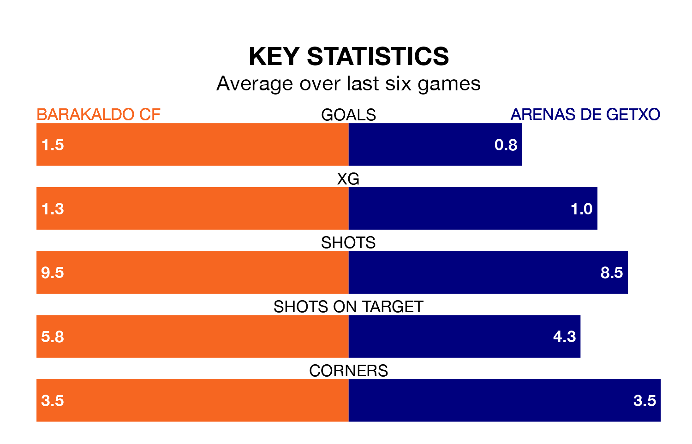

Barakaldo CF are heavy favourites to keep all three points at home in Sunday's kick-off against Arenas de Getxo.
Barakaldo, who sit second in Segunda División RFEF Group 2 with 18 games played, are priced at 1.6 to seal victory at the Estadio Nuevo Lasesarre.
Sitting 11 places and 22 points behind them in the table, Arenas de Getxo are 4.9 to win with *Betting Company*, while the draw is at 3.2.
With 29 goals in 18 games so far this season, Barakaldo are scoring more than average in the league with 1.6 goals per game. And they are conceding fewer than average, letting in 11 goals at a rate of 0.6 per game.
Arenas de Getxo, meanwhile, are below average scorers, with 0.8 goals per game, compared to a league average of 1.1. They have conceded 1.3 goals per game.
The home team are in fantastic form in Segunda División RFEF Group 2, with five wins and a draw from their last six games.
With a win and three draws over that period, the visitors' form is much worse – they have taken six points from 18, compared to Barakaldo's 16.
In the last 10 years, Barakaldo and Arenas de Getxo have played each other on 12 occasions. Barakaldo won two of them, Arenas de Getxo four, and they drew six times.
On average, Barakaldo scored 0.8 goals and Arenas de Getxo 1.2 in those matches.
Their last meeting was on September 9, when they played out a 1-1 draw.
Barakaldo's last match was on January 13, a 2-0 win against AD San Juan.
Arenas de Getxo drew 1-1 with Utebo last time out, on January 14.
Updated: 14:53 (UTC), 16/01/24